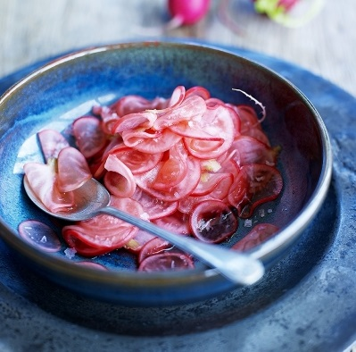
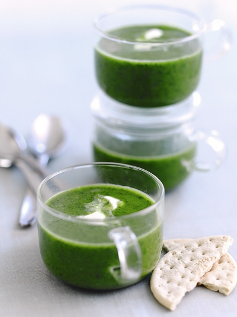
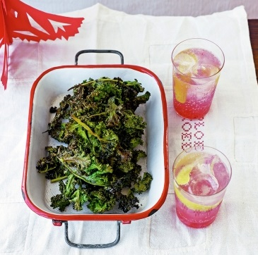

Rinse the lentils, then cook in plenty of salted water until tender. Drain and set aside to cool
Trim and finely slice the spring onions, halve the tomatoes, then pick and finely chop the herb leaves.
Mix the cooled lentils with the spring onions, tomatoes, herbs and 4 tablespoons of oil.
Add the lemon juice to taste, season with sea salt and black pepper, then serve.

Radish Pickle
INGREDIENTS
1 bunch of radishes
2 tablespoons red wine vinegar
2 tablespoons caster sugar
METHOD
Trim and finely slice the radishes.
In a bowl mix together the vinegar and sugar
Add the radishes and toss together, with a pinch of sea salt, leaving to marinate for 10 to 15 minutes..

Watercress Soup
INGREDIENTS
2 potatoes
2 onions
2 cloves of garlic
olive oil
400 ml organic stock
3 bunches of watercress
METHOD
Peel and roughly chop the potatoes, onions and garlic.
In a large saucepan, heat a little olive oil, then sauté the potato, onion and garlic until the onions are translucent.
Add the stock and simmer until the potato is soft. Chop and add the watercress and simmer for a further 3 to 4 minutes.
Using a hand blender, liquidise the soup until smooth.
Serve with a swirl of crème fraîche and some Fortt’s Bath Oliver biscuits, if you like.
Easy Tomato Chutney
INGREDIENTS
250 g red onions
500 g mixed-colour tomatoes
1 fresh red chilli
75 ml red wine vinegar
140 g brown sugar
METHOD
Peel and finely slice the onions, roughly chop the tomatoes and deseed and finely slice the chilli.
Put everything in a pan, season to taste and stir well to combine. Simmer for 30 to 40 minutes or until jammy. Pour into a sterilised jar and leave to cool. Keeps for up to 4 weeks in the fridge. Perfect on toast with a chunk of cheddar.
Comments

Salt & Cinnamon Kale Crisps
INGREDIENTS
12 large whole kale leaves , (200g)
3 tablespoons olive oil
1/2 tablespoon sugar
1/2 tablespoon cinnamon
METHOD
Preheat the oven to 200ºC/gas 6.
Rinse and dry the kale leaves before removing most of the centre stalk, leaving long, thin pieces of kale.
Toss the kale in the oil, then sprinkle with the sugar, cinnamon and ½ tablespoon of sea salt.
Arrange the leaves in a single layer on a couple of baking trays and bake for 5 minutes, until crisp.